Hỏi đáp
 Giới thiệu
Giới thiệu
 Ưu đãi
Giới thiệu
Ưu đãi
Ưu đãi
Giới thiệu
Ưu đãi
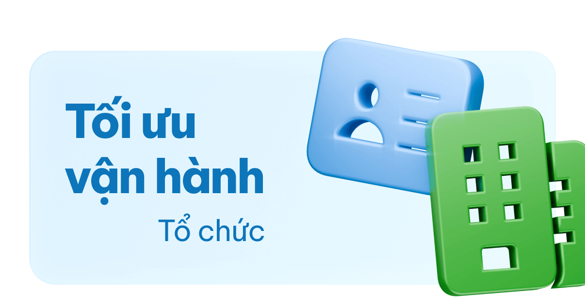
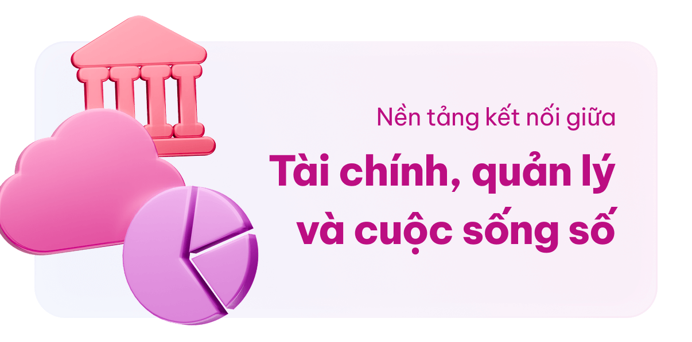
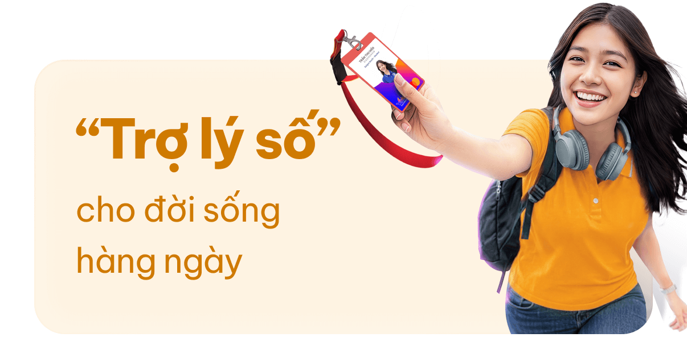
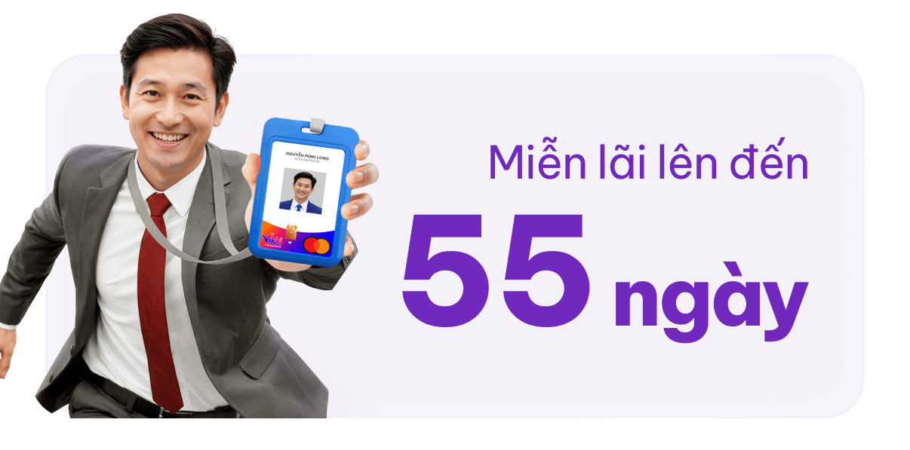
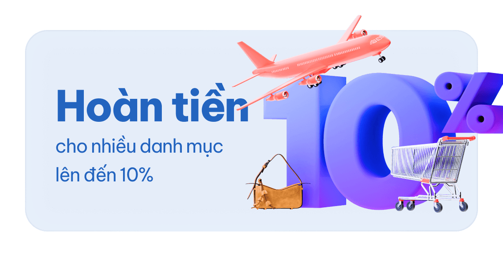
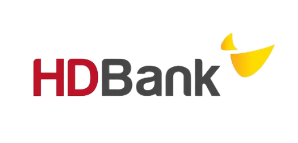
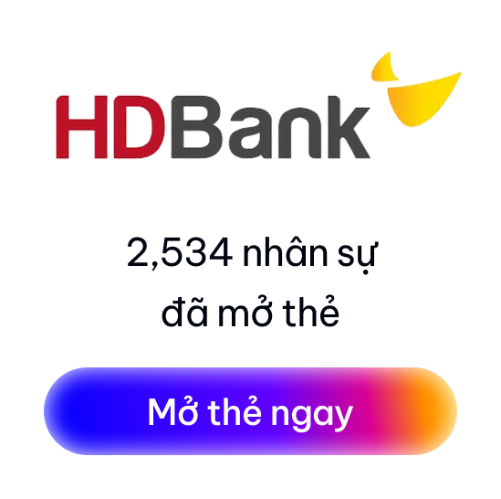
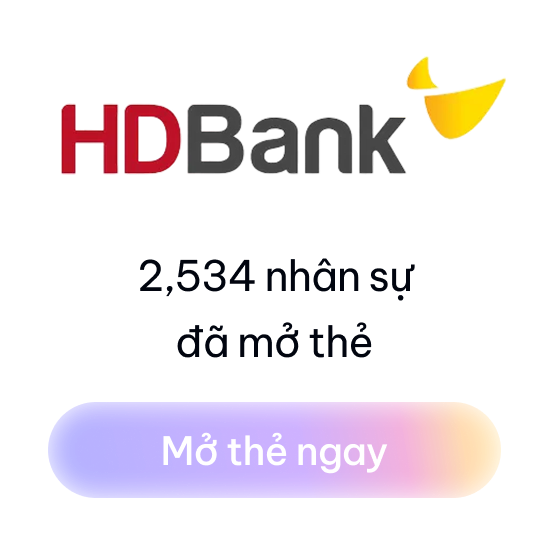
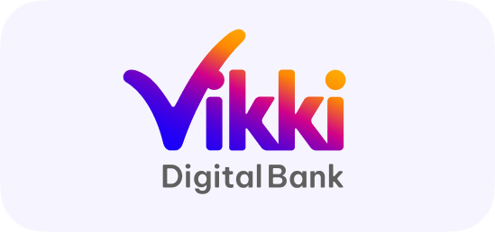
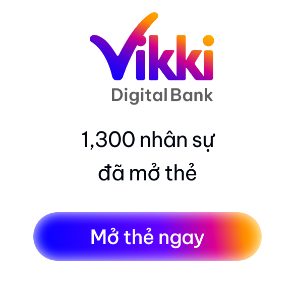
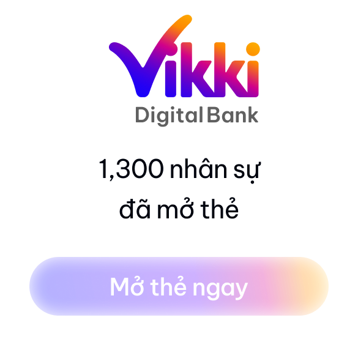
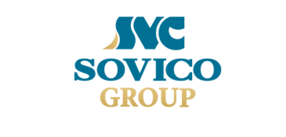
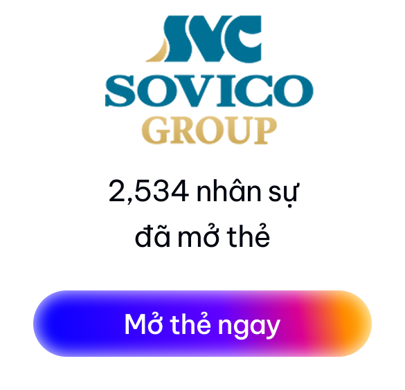
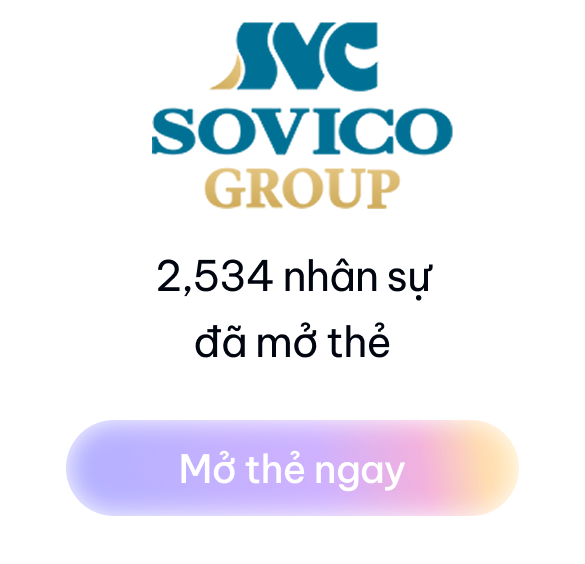
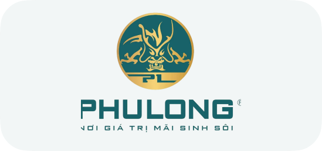
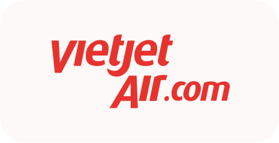
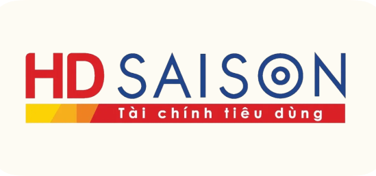
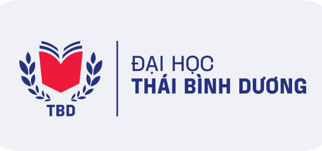
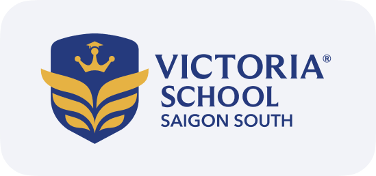
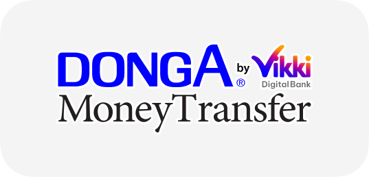
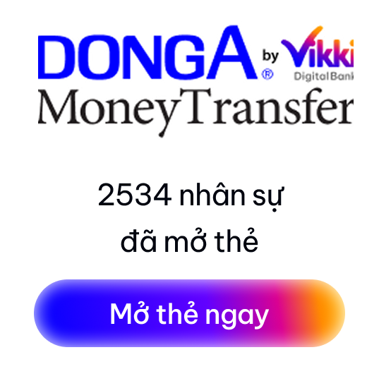
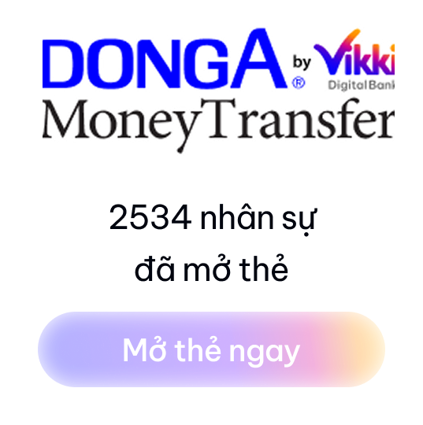


Để mở thẻ Vạn năng VikkiONE Connect, bạn cần đáp ứng các điều kiện sau:
Bạn vui lòng thực hiện một trong các bước sau:
Thẻ VikkiONE Connect ngoài là thẻ tài chính còn là thẻ nhân viên nên chủ thẻ cần:
Bạn có thể mở khóa thẻ ngay lập tức trên ứng dụng Vikki theo các bước sau:
Để đảm bảo an toàn, bạn vui lòng khóa thẻ ngay lập tức theo một trong hai cách sau:
Sau khi khóa thẻ, bạn có thể:
Yêu cầu phát hành thẻ thay thế trực tiếp trên ứng dụng Vikki hoặcVikki Bank không thể đơn phương hủy giao dịch đã được thực hiện thành công.
Để hủy giao dịch, bạn vui lòng làm theo hướng dẫn:
Bạn có thể đặt lại mã PIN mới trực tiếp trên ứng dụng Vikki theo các bước sau:
Bạn cần cài đặt ứng dụng Vikki – Ngân hàng số bằng cách quét mã QR hoặc bấm vào đường dẫn trong email mời trải nghiệm thẻ để tải ứng dụng. Ngoài ra, bạn cũng có thể tải trực tiếp từ App Store hoặc Google Play. Sau khi tải thành công, bạn thực hiện các bước sau:
Có. Hệ thống ghi nhận chính xác theo số tiền thực tế bạn thanh toán. Việc thanh toán thiếu dù là số tiền nhỏ cũng sẽ ảnh hưởng như sau: